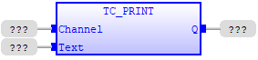
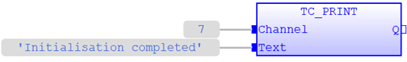
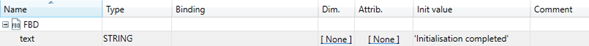
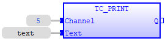
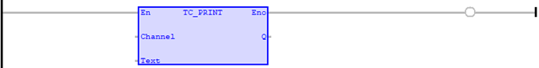
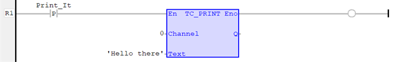

Command
TC_PRINT command allows the program to output a series of characters to a channel. A channel may be a serial port or some other type of connection to the Motion Coordinator.
This command is the IEC 61131-3 counterpart of TrioBASIC command ‘Print’.
Please refer to TrioBASIC command ‘Print’ for more details.
|
Channel : INT; |
Channel used. Refer to TrioBASIC command ‘Print’ for more details. |
|
Text : STRING; |
Text to be printed. Instead of a STRING variable, a STRING literal value enclosed in single quotation (‘’) marks is also a valid input, e.g. ‘This is a text’. |
|
Q : DINT; |
Result of execution. Non-zero value specifies error. |
Sets the digital outputs to the binary pattern given in Value.
TC_PRINT ( Channel (*INT*) , Text (*STRING*) );
Print the status of Initialisation process onto Channel 0.
IF
NOT
bInitialised
THEN
// Print status
TC_PRINT
(
0
,
'Initialisation
completed'
);
// Set flag
bInitialised:=
TRUE
;
END_IF
;

‘Initialisation completed’ is printed onto Channel 7.

The content of ‘text’ variable is printed onto Channel 5. ‘text’ is a local variable that has ‘Initialisation completed’ string set as its initial value.
|
Local Variables |
|
|
Text Mode |
VAR
|
|
Grid Mode |
 |


Every time ‘Print_It’ becomes true, the text ‘Hello there’ will be printed onto Channel 0 once.
